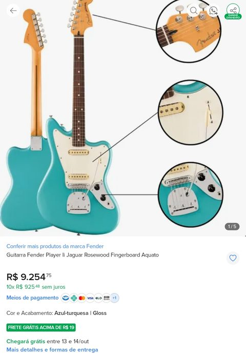
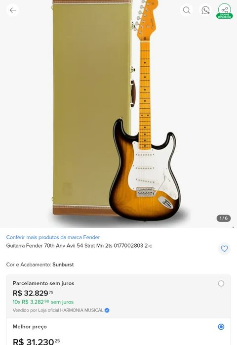
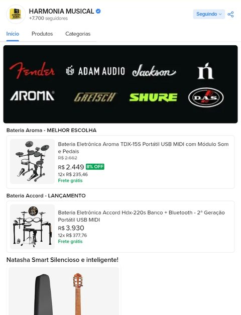

Harmonia Musical
Especialista em E-commerce & Design de Produto · jan/2023 – ago/2024
E-commerce de instrumentos musicais · Mercado Livre e Marketplace
- Ajudei a criar a fanpage da loja, que já operava no Mercado Livre
- Revisei as fotos de todos os anúncios; busquei material com os fornecedores e fotografei os produtos que não tinham imagem
- Criei as fotos de capa das guitarras: frente e verso, com case quando vinha, e detalhes ampliados. O padrão diferenciou os anúncios da loja dos concorrentes e os tornou reconhecíveis
- Padronizei o tamanho das imagens com margens, para aparecerem alinhadas nos cards de busca
- Melhorei descrições e palavras-chave (SEO de anúncios) para facilitar a busca e o ranqueamento
- Corrigi anúncios vinculados a catálogos errados
- Cadastrei os produtos novos no Mercado Livre e no Marketplace, conforme chegavam à loja
A loja hoje no Mercado Livre: loja oficial com +7.700 seguidores


